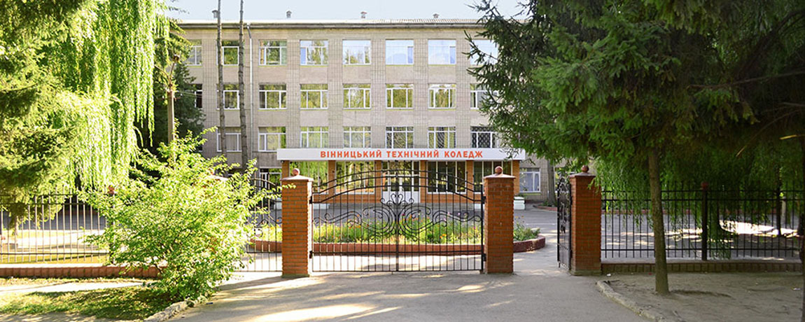

Вінницький технічний коледж - це базовий навчальний заклад І-ІІ рівнів акредитації Вінницької області.
Сьогодні коледж є одним з найбільших і найавторитетніших закладів в області,
де готують на денній та заочній формі навчання висококваліфікованих фахівців із 7 спеціальностей

Відділення